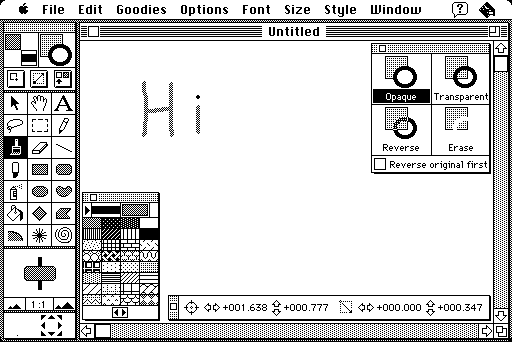

Download
lightningpaint.zip (160K) LightningPaint 1.1 repackaged into a zipped hfs disk image and checksum file. The disk image can be mounted with Mini vMac.
lightningpaint.sit (164K) LightningPaint 1.1 in the original format.
copyright: Humayun S. Lari
mod date: Nov 24, 1991
license: shareware
A "powerful black-and-white paint program".

Here's a description from the author, not included in the program archive:
Date: Sun, 24 Nov 91 17:25:52 -0500
From: Humayun Lari <lari@cs.unc.edu>
Subject: LightningPaintDear MacPeople,
LightningPaint is a powerful black-and-white paint program with a clean interface, and supports paintings of practically any size and resolution. It has all the standard paint tools, plus some special ones like the starburst, spiral, and mixing spray. A unique zoom control makes it easy to choose the magnification you want -- you can zoom in or out anywhere from 1:16 to 16:1, and you can edit all the way. Special effects include different inks that all tools use, graduated gray fills and shadows, the fun 'fisheye' command, and the ability to use the picture on the clipboard to fill an area. To make painting easier, LP has the ability to mask painting to a selected area, as well as a 'snapshot' like that in MacPaint(TM) 2.0. Little touches, like power keys for special effects, and power scrolling to ease moving around the painting, help during editing.
LP is $14 shareware (only $7 if you're a student). The best thing I can say about it is that *I* use it all the time. In my biased opinion, it's definitely worth its fee; at the least, it's fun to play with! I'd really like to write more shareware, but that depends on the response I get. Your payment of the shareware fee will show me that someone thinks my programming has value!
Hope you enjoy it,
Humayun Lari
If you find these downloads useful, please consider helping the Gryphel Project, which hosts them.
Here are the md5 checksums for the downloads, signed with Gryphel Key 5:
--------- GRY SIGNED TEXT --------- a7fcae87c17e274bf7adf47ba1acb6cd lightningpaint.zip 5be807dbb90c458e802289f507594550 lightningpaint.sit ------- BEGIN GRY SIGNATURE ------- Gry/4Xa8CFcUzxdN/Hr0SKNDtPIXdJHiTa9t+un85Xl69t7dOqNVfe8sGk7KZzbC jl8bkqAjA0FrMqRlfQXt6RhP28+Vq3uvVPs2RbwlEin8CTRhL8dmmhPsbdJf94/+ V541sDrkqLCZw0wxzbv0EcFVUyHDilPZtdmPB+j8GCxLxOyXFwOgevS3STasov6i -------- END GRY SIGNATURE --------